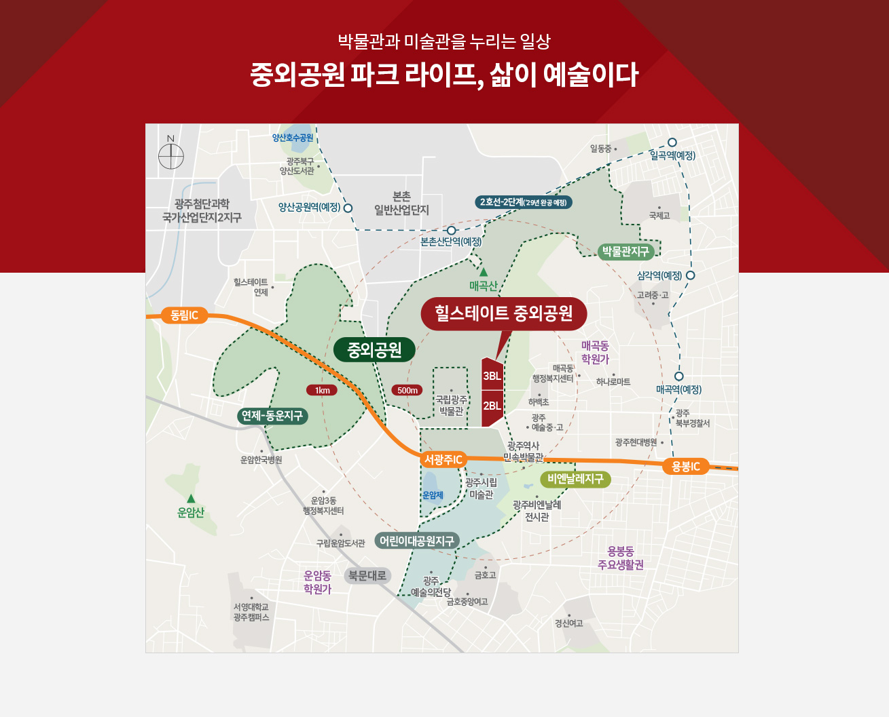

본 위치도, 교통도 등은 소비자의 이해를 돕기 위한 것이므로 실제와 차이가 있을 수 있습니다.
단지 주변 교통시설, 기타 주변 시설 현황, 지구단위 계획 등은 인·허가 및 정부시책에 따라 변경 및 취소 가능하며 실제와 차이가 있으므로 직접 확인하시기 바라며, 이는 사업주체, 시공사와 무관합니다.
단지 설계 사항들은 추후 완공 시 변경될 수 있으며 실제와 차이가 있을 수 있으므로 이와 관련하여 반드시 견본주택에서 확인하시기 바랍니다.
광주광역시 도시철도건설2호선-2단계는 광주광역시 홈페이지(www.gwangju.go.kr) 도시철도건설 사업계획을 참고하였습니다.
중외공원 면적 (총 2,082,873㎡) 및 지형 등은 「광주광역시 고시 제2023-252호」를 참고하였습니다.
2BL, 3BL은 별도 사업승인을 득했으며 관리소는 각 블록별로 설치 예정입니다.
어린이대공원지구, 비엔날레지구, 연제-동운지구, 박물관지구는 「광주광역시 고시 제2021-429호」를 참고하였습니다.
매곡동학원가와 운암동학원가는 네이버지도 학원밀집 지역을 참고하였습니다.
초등학교, 중학교, 고등학교 학생 배치 등 관련사항은 광주광역시 동부교육지원청, 광주광역시교육청 등 해당기관에 직접 확인하시기 바랍니다.
단지 동측과 하백초 서측을 연결하는 왕복 2차로 도로는 “광주광역시 북구 고시 제2020-102호, 2022-31호”를참 고하여 연출한 이미지로 차이가 있을 수 있으며, 인·허가 및 정부시책에 따라 변경 및 취소가 가능합니다.